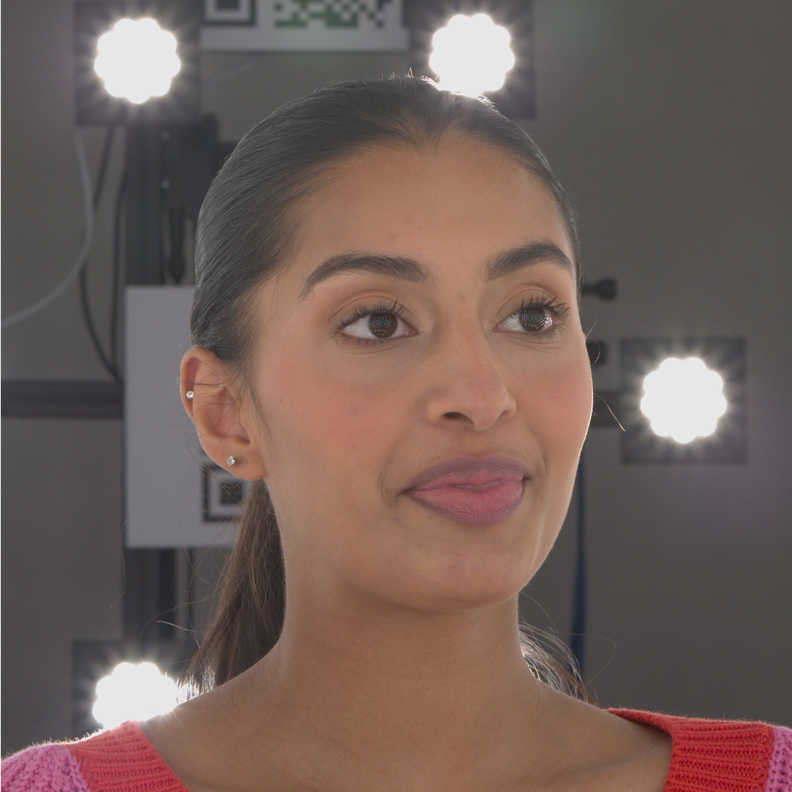

Dataset
Our dataset, ActorsHQ, consists of 39, 765 frames of dynamic human motion captured using multi-view video. We used a proprietary multi-camera capture system combined with an LED array for global illumination. The camera system comprises 160 12MP Ximea cameras operating at 25fps. Close-up details that are captured at this resolution are highlighted in the figures below. The lighting system provides a programmable lighting array of 420 LEDs that are time-synchronized to the camera shutter. All cameras were set to a shutter speed of 650us to minimize motion blur for fast actions.

